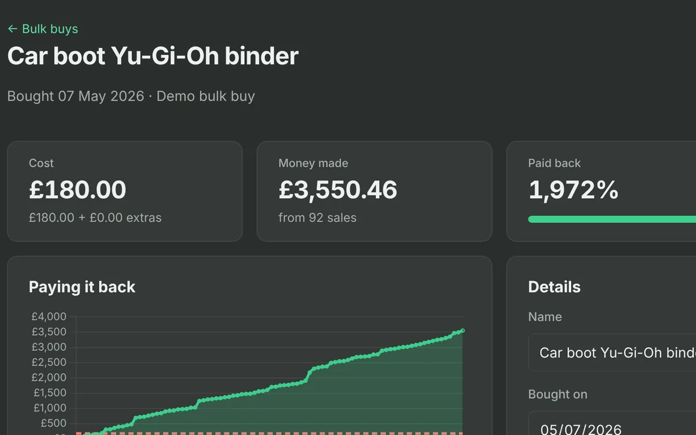
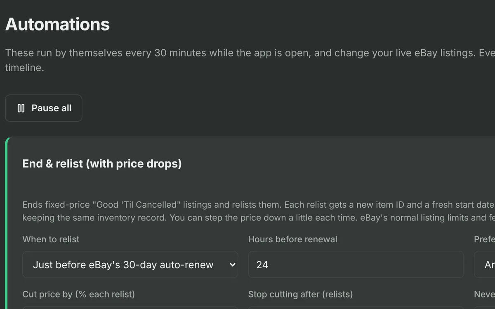
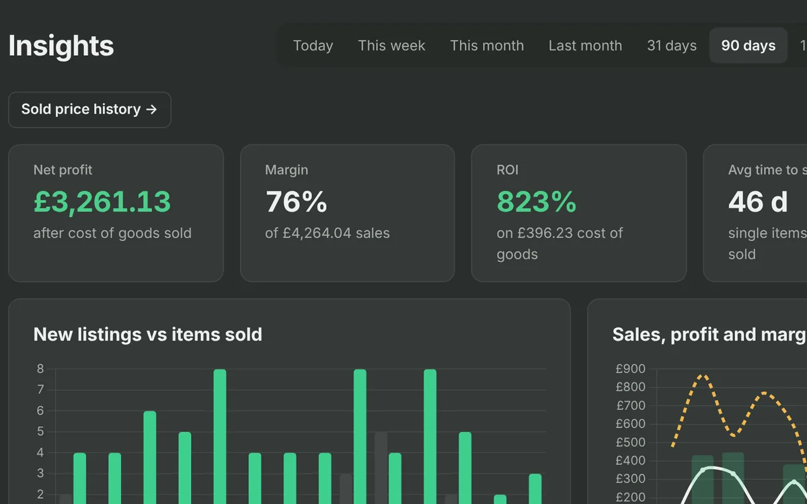
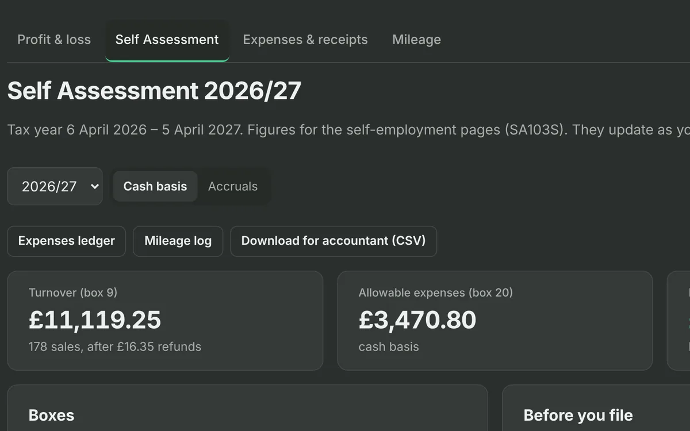
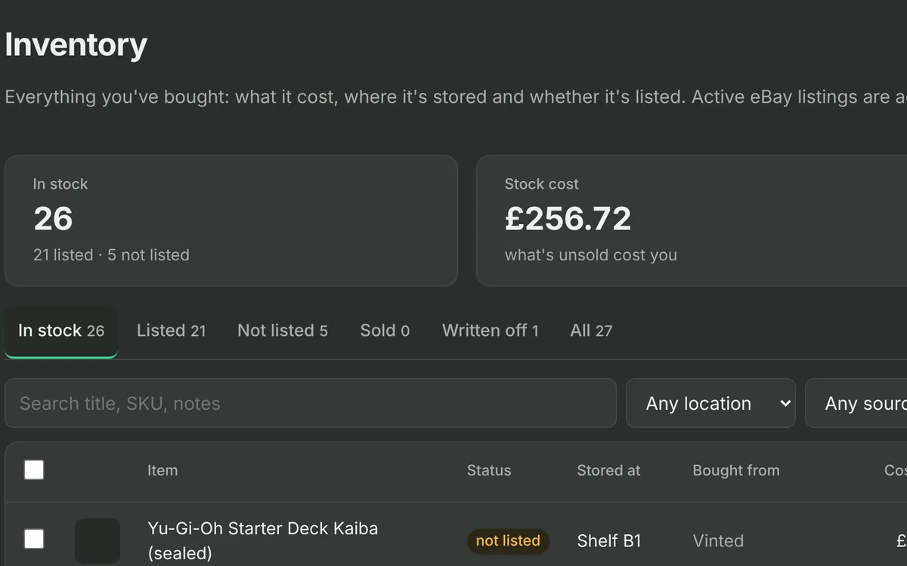
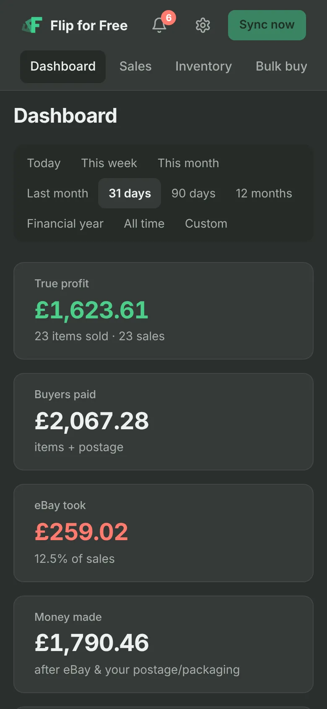

Flip for Free
Flip for FreeSplit a lot's cost across what's in it
Log a £60 binder once. Its cost is spread over the cards (evenly or by price), the valuable one keeps its own cost, and you see when the lot has paid for itself.

Free eBay profit tracker · made for UK resellers
Flip for Free takes every eBay fee, ad, postage label and refund off each sale, then your postage, packaging and what you paid for it. It's free, it runs on your own computer, and you sign in with your own eBay keys.
Windows, Mac, Linux, Docker, or a free server that's always on.
Every line comes from eBay's own money records for that order, matched to the penny.
Your eBay payout says £82.94. The watch actually made you £70.64. Flip for Free shows you that for every sale, automatically.
The real app, with demo data
No spreadsheets and no exports. Press Sync and your orders, fees and listings arrive from eBay.

What it does
Car-boot binders, house-clearance lots, the one card that pays for the lot, items that sit for months.
Log a £60 binder once. Its cost is spread over the cards (evenly or by price), the valuable one keeps its own cost, and you see when the lot has paid for itself.

End and relist Good 'Til Cancelled listings before eBay's 30-day renewal, step the price down to a floor, and add promoted-listing ads only after something's gone unsold for a while.

Average days to sell, and "one sells every 11 days" for multi-quantity listings, counted from the first listing even after relists.

SA103S figures on cash or accrual basis, expenses with receipts, HMRC mileage including post office runs, and checks for missing data before you file.

What you paid, where you bought it, which box it's in, and its whole history from bought to sold.

When something sells anywhere, its stock comes off everywhere else.

Yours, not ours
Free, about 15 minutes
You'll need a free eBay developer account first; eBay approves those in about a day.
# Just want a look? Fake data, no eBay account needed:
git clone https://github.com/JosephsStuff/Flip-For-Free.git && cd Flip-For-Free
python app.py --demoYes. It's free for your own selling, on your own computer or a free server. You only pay if you sell Flip for Free itself as a product.
Yes, a free one. Register at developer.ebay.com; eBay approves new accounts in about a day. You then create your own keys, so nobody else has access to your eBay account.
It reads eBay's own money records for each order (fees, ads, postage labels, refunds, regulatory fees) and matches them to the penny, then takes off your postage, packaging and what you paid.
Vinted doesn't allow other tools to post for you, so Flip prepares the title, description, price and photos for you to paste in, and reminds you to take the listing down if it sells on eBay.
Yes. Pair your phone on your home Wi-Fi, or run Flip for Free on a free Oracle Cloud server and open it anywhere privately with Tailscale.
In one database file in a folder you choose, such as Google Drive. Nothing is sent to us; there is no 'us' server.
It prepares the figures for the Self Assessment self-employment pages, box by box, with checks for missing data. It's a record-keeping helper, not tax advice.
Yes. It has a Claude connector and a full JSON API, so you can say things like 'log a £60 binder of 40 cards from the car boot'.